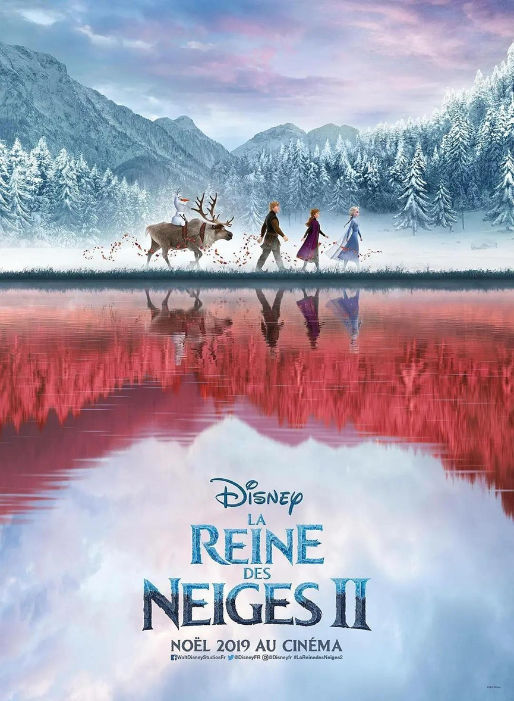
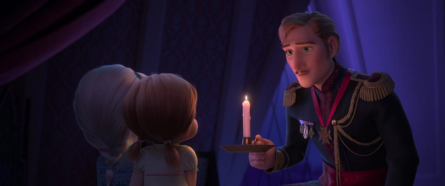
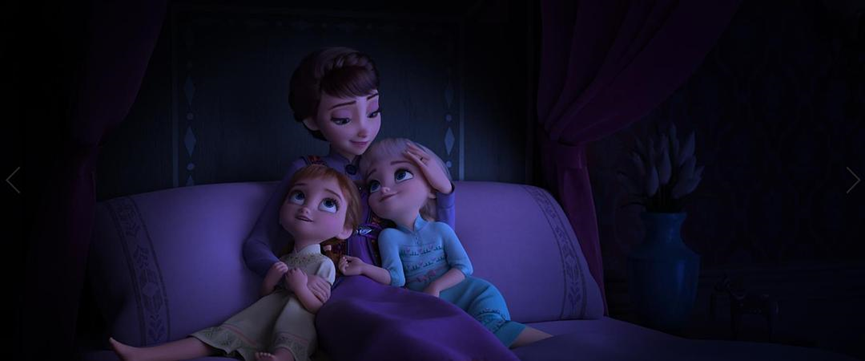
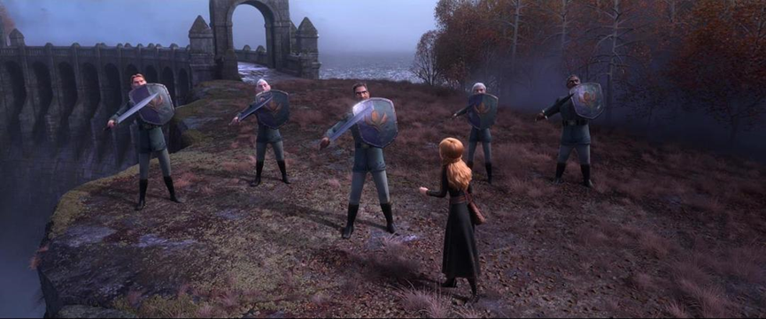
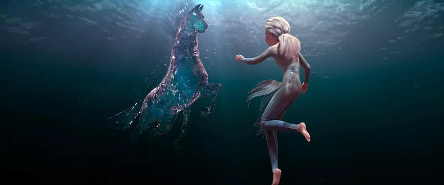

冰雪奇缘Ⅱ——The courage to embrace
在写下这些文字之前，我认真看了这部音乐剧，或者说童话剧，以及各种各样的影评，褒贬不一。

我没有携带着与第一部相比较的观念去看这部剧，相比较而言，对于这种有Ⅱ甚至Ⅲ的电影，我更愿意并且也希望自己能够把之前的只当作一个故事前景的介绍，不夹杂任何对比的成分。
一千个读者就有一千个哈姆雷特，我只能保证自己没有解读成哈利波特，这也是这句话的正确用法。
这部剧的名字其实很细节，如果你读的书比较多，你会了解到一个有趣的现象，欧美国家世袭的女王称号一般都有特定的规律，比如伊丽莎白二世的英文全称是：Her Majesty Queen Elizabeth II，亨利八世其实是：Henry Ⅷ。
不得不说名字起的很用心，思考一下便能想到，这个其实是与Anna在这一部成为女王二世相照应的，也算是轻微剧透了。
Elsa赠与妹妹Anna的女王之位，不只是代表了Elsa终于解开了自身的无形束缚，得到了Frozen Free，更像是Elsa说的那样，两人用像Ice一样纯净无暇的爱，建立起了人与自然和谐沟通的桥梁，我想这才是这部音乐剧想要表达的最主要的内核。
给我触动的点其实很多，剧目开篇Anna与Elsa相互依偎以及睡姿的不同，恰如其分地引人怜惜。


我找遍了几乎所有的影评，也没有人记录了Anna的无忧无虑的睡姿以及微鼾，Elsa蜷缩在床上紧闭双眼的情景，当时所想的全部就是给她一个大大的拥抱。
魔法对于别人来说是力量，对于她来说可能只是束缚和位置的恐惧。
其实剧情有很多不合理之处，我能够理解编剧想要塑造一条揭开Elsa魔法之谜线索的想法，但是不得不说其实是前后矛盾的。
Anna和Elsa的母亲身为一个魔法种族，其后裔继承其魔法的可能性也是很大的，但是剧中却为了塑造父母的伟岸形象（虽然确实很伟岸），“派遣”其前往失落之地寻找女儿的魔法之谜，遇难身亡。
大概是可以理解成牵强附会地加重Elsa过度沉重的自责以及爱的主题。
Elsa爱那些关心她的人，她爱的方式是远离，不想因为自己的原因令其他人受到伤害。
那些关心Elsa的人爱Elsa，他们爱的方式是靠近，想要和Elsa一起承担她未知的命运。
因为深爱，所以互不理解。
你想拥抱布满荆棘的我，我却不想让荆棘刺痛你我的心灵。
当你我分别之时，我伸出手，拥抱你渐行渐远的背影。
不知道你们是否发现了其中所隐含的不被人所关注的环保主题。
人们建造的大坝，从生态学角度讲，其实确实会对自然环境造成一定的影响。
比如我国所建造的三峡大坝，虽然被称为是二十世纪的奇迹之一，也确实为造福了很多人，然而它所造成的生态环境恶化却被很多人所忽略。
水体富营养化，泥石流，滑坡，水土流失，似乎都像是自然的哀嚎与哭泣。
有一种风趣的说法将之比喻为“美国为伊拉克建造的民主大坝”，政治相关，实不应由一部童话剧所展现。
不加评论。

像不像是环保人士与建筑者的对峙？
除此之外，剧中的精灵形象也是给人耳目一新的感觉，不像是中国动画中，火就是红色小人，水就是蓝色小人的形象，大概是森林冰火人中的样子。
Fire.
大抵是拟自沙曼罗达（Salamander），火蜥蜴或者说是蝾螈，其并不属于北欧神话，其作为火元素精灵的概念可以追溯到中世纪炼金术士帕拉塞尔斯的著作。
这么解释似乎破坏了它憨态可掬的形象，剧中的它毕竟那么可爱，罪过罪过。
有时候过于追求真实和源头，会让原本的浪漫和美好变得索然无味。
Water.

第一眼看上去像是中国蒙古地区的矮马，主要是其侧淌而下的鬓毛极具特色。
身骑白马，走三关。
不由自主地想到了似乎这部剧中的所有角色性格并没有明确的性别之分，但是又能明显感觉到对男一号Kristoff的忽视，除了凸显的男女之间的永恒不变Forever的爱情，更像是一个工具人。
大概是弱化后的女权主义的一种合理的，较为人所接受的新形式，Nice。
Wind.
Earth.
不可忽略的Sven以及Olaf.
整部剧幽默风趣的主要来源，但是从我个人的角度来讲，我更愿意将之理解成Anna与Elsa、Kristoff本身所涌现的与自然友好相处的特征点。
Water has Memory.
这句话给我的感触很深，假若所有的看似没有思想的自然物都有记忆，这个世界又会变成什么样子呢？
风会保留住花的清香，泥土记录着种子的成长，雨滴思念着远方的某条小鱼。
靡靡之音，口腹之欲。
逝者如斯，不舍昼夜。
时间的冲刷下，什么事物能够永存呢？
Olaf的灵魂一句：You look a little older.
记录着多少人的成长和遗忘的时光。
工科生看问题好像确实是会少了一些感情性的元素，虽说是有些索然无味，但是一部好剧中心内核是不会因为审美角度的不同而发生本质更改的。
压轴的自然就是Music.
Show Your Self.
Frozen Free Fall.
Into the Unknow.
Lost in the Wood.
The Next Right Thing.
When I am Older.